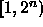
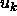
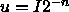
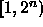
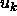
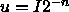

In this section we discuss some of the desired properties of good random number generators. We shall then explain specific implications of these for parallel random number generation.
First of all let us define a random number sequence,  where
i is an integer. In this article we will be concerned exclusively
with uniformly distributed numbers. Other distributions can be
generated by standard techniques [18]. Uniform numbers can be
either reals, by convention in (0,1) such as those returned by the
FORTRAN ranf and C drand48 functions, or integer, by
convention in  for some n close to the word size on the
computer. We shall denote the reals by  and the integers by
. Clearly, for many purposes integer and real generators on a
computer are virtually equivalent if n is large enough and if we
define .
where
i is an integer. In this article we will be concerned exclusively
with uniformly distributed numbers. Other distributions can be
generated by standard techniques [18]. Uniform numbers can be
either reals, by convention in (0,1) such as those returned by the
FORTRAN ranf and C drand48 functions, or integer, by
convention in  for some n close to the word size on the
computer. We shall denote the reals by  and the integers by
. Clearly, for many purposes integer and real generators on a
computer are virtually equivalent if n is large enough and if we
define .